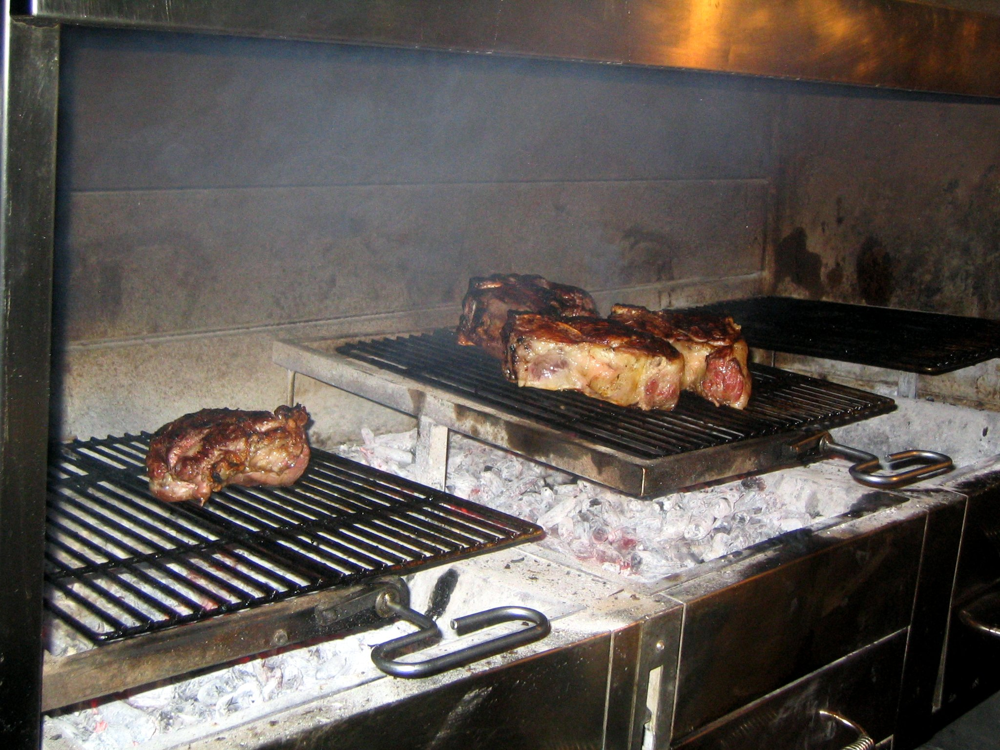

Bistecca alla Fiorentina

Description
The Bistecca alla Fiorentina, or Florentine-style beef steak, is a typical italian dish and its name comes from the city of Florence.
It looks like a T-bone steak, and it is obtained from the sirloin cut of the calf of the Chianina, an italian breed of white cattle.
Ingredients
- Well, all you need is a good sirloin cut of a Chianina cattle, 1-1,5 kg in weight and 5 or 6 cm in height, and previously aged in cold rooms for about two weeks.
Steps
- Make sure the cut of meat is at room temperature before cooking
- Heat the barbecue grill
- At first, put the steak close to the coals, so that an aromatic crust is formed thank to the Maillard reaction
- Cook the steak for 3 to 5 minutes per side, no longer than that
- Put the steak standing on one side and cook it for 5 to 7
- Enjoy!
Source